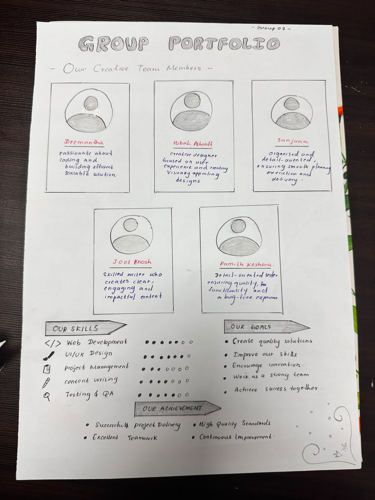

FACILITATORMs. Chathurika Koswatte
Session Overview
The introductory session provided an overview of the Professional Skills module and its purpose in developing essential employability skills. Ms. Chathurika Koswatte introduced the module and explained the importance of recognising our abilities, achievements, and future goals. The session also included a group activity that encouraged collaboration and personal reflection.
My Experience
During the session, we were divided into groups and asked to create a group portfolio. Our group consisted of five members, and we worked together to present our skills, achievements, and future goals. This activity gave us an opportunity to share our individual experiences and combine them into one portfolio.
My Reflection
This activity encouraged me to think more carefully about my existing skills, achievements, and future ambitions. Working with my group also reminded me that everyone brings different strengths and experiences to a team. It was a meaningful introduction to the module because it connected personal development with teamwork. The experience helped me recognise the importance of understanding my abilities while identifying areas for further improvement.
Moments from the Session

session-intro-01.jpg